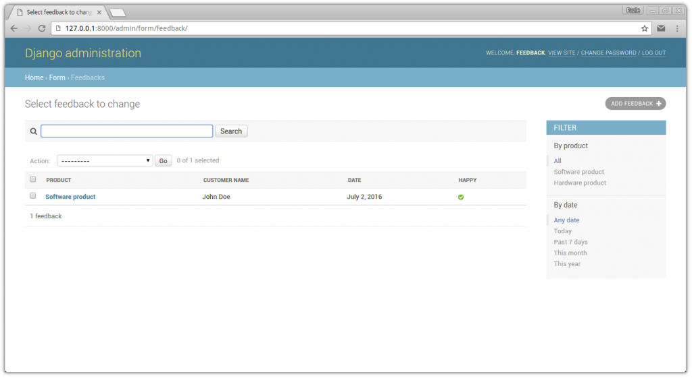

Django is a popular Python web framework. In this tutorial we are going to create a simple feedback system using Python 3 and Django 1.9. It is assumed that you know the basics of django. If not, then please read the django official tutorial first. It is also assumed that you are using python 3 and django 1.9.x is installed (possibly in a virtual environment) in your computer. In this tutorial we will focus mostly on code. In most of the case, things will not be described in depth, but the documentation link will be provided, so no worry. Ok, let’s start.
Creating the django project and app
Run this command in the terminal/console:
django-admin startproject feedback
This will create a directory structure like this:
feedback ├── feedback │ ├── __init__.py │ ├── settings.py │ ├── urls.py │ └── wsgi.py └── manage.py
Now enter to the project directory by:
cd feedback
Well, now we will create an app named ‘form’:
python manage.py startapp form
This will create the directory structure like this:
feedback ├── feedback │ ├── __init__.py │ ├── settings.py │ ├── urls.py │ └── wsgi.py ├── form │ ├── admin.py │ ├── apps.py │ ├── __init__.py │ ├── migrations │ │ └── __init__.py │ ├── models.py │ ├── tests.py │ └── views.py └── manage.py
If you know the basics of django, you know what’s going on. If you stuck here, please read the django official tutorial first.
Enabling the app at settings.py
Open the feedback/settings.py file and add ‘form’ in the INSTALLED_APPS list, like this:
INSTALLED_APPS = [
'django.contrib.admin',
'django.contrib.auth',
'django.contrib.contenttypes',
'django.contrib.sessions',
'django.contrib.messages',
'django.contrib.staticfiles',
'form',
]
Additionally you can change the time zone from settings.py file. I am setting the time zone from ‘UTC’ to ‘Asia/Dhaka’:
TIME_ZONE = 'Asia/Dhaka'
Creating the models
Models are the python classes which contain the information about database. Read more about models here. For your information, in this tutorial, we are using SQLite as database backend. It is the default, so no further action is required.
In our feedback system, we will receive product based feedback. So there should be products in our database. For simplicity we assume that, our product has only one property, just its name.
And in the feedback form, we want to collect the customer name, email, related product, detailed feedback, is he/she happy or not, and date.
So to design the models, open the form/models.py file and add this code:
from django.db import models
class Product(models.Model):
name = models.CharField(max_length=120)
def __str__(self):
return self.name
class Feedback(models.Model):
customer_name = models.CharField(max_length=120)
email = models.EmailField()
product = models.ForeignKey(Product)
details = models.TextField()
happy = models.BooleanField()
date = models.DateField(auto_now_add=True)
def __str__(self):
return self.customer_name
Now, run this command for making the migrations (database changes):
python manage.py makemigrations
And apply the migrations by this command:
python manage.py migrate
To know the details about migrations, read this.
Enabling and configuring the admin interface
To use the default admin interface provided by django for our models, we need to create the super user first. Run this command to do that:
python manage.py createsuperuser
This will prompt for username, email and password. Provide this.
Now to enable and to customize the admin interface of our model, open the form/admin.py file and put this code in it:
from django.contrib import admin
from .models import Product, Feedback
class FeedbackAdmin(admin.ModelAdmin):
list_display = ('product', 'customer_name', 'date', 'happy',)
list_filter = ('product', 'date',)
search_fields = ('product__name', 'details',)
class Meta:
model = Feedback
admin.site.register(Feedback, FeedbackAdmin)
admin.site.register(Product)
The details about admin site can be found here.
Now run this command to start the development server:
python manage.py runserver
Now go to http://127.0.0.1:8000/admin/ from your browser, log in and add some products and feedback and check that everything works just fine.

{kind=link}
Creating the view
First create a new file at form/forms.py and put this code in it:
from django import forms
from .models import Feedback
class FeedbackForm(forms.ModelForm):
class Meta:
model = Feedback
exclude = []
Learn more about forms and model forms.
Now edit the form/views.py in this way:
from django.shortcuts import render
from .forms import FeedbackForm
def feedback_form(request):
if request.method == 'POST':
form = FeedbackForm(request.POST)
if form.is_valid():
form.save()
return render(request, 'form/thanks.html')
else:
form = FeedbackForm()
return render(request, 'form/feedback_form.html', {'form': form})
Creating the templates
Create a folder named ‘templates’ inside the ‘form’ folder. And create another folder named ‘form’ inside the ‘templates’ folder. Now create three empty html file named ‘base.html’, ‘feedback_form.html’ and ‘thanks.html’ inside the form folder. The directory structure should look like this:
form ├── templates │ └── form │ ├── base.html │ ├── feedback_form.html │ └── thanks.html
Now, open the form/templates/form/base.html file and add this code to it:
<!DOCTYPE html>
<html>
<head>
<title>{% block title %}{% endblock %}</title>
</head>
<body>
{% block body %}{% endblock %}
</body>
</html>
Open the form/templates/form/feedback_form.html file and add this code to it:
{% extends 'form/base.html' %}
{% block title %}Feedback Form{% endblock %}
{% block body %}
<form action="{% url 'form:home' %}" method="POST">
{% csrf_token %}
{{ form.as_p }}
<input type="submit" />
</form>
{% endblock %}
Finally, open the form/templates/form/thanks.html file and add this code to it:
{% extends 'form/base.html' %}
{% block title %}Thanks{% endblock %}
{% block body %}
<h1>Thanks for your response.</h1>
<p><a href="{% url 'form:home' %}">Response again?</a></p>
{% endblock %}
You can learn more about django template language.
URL configuration
Create and open the file form/urls.py and put this code in it:
from django.conf.urls import url
from . import views
app_name = 'form'
urlpatterns = [
url(r'^$', views.feedback_form, name='home'),
]
Now, edit the feedback/urls.py if like this way:
from django.conf.urls import include, url
from django.contrib import admin
urlpatterns = [
url(r'^', include('form.urls')),
url(r'^admin/', admin.site.urls),
]
You can learn more about django URL dispatcher.
Conclusion
All done! Now fire up the django development server by this command:
python manage.py runserver
Now go to **http://127.0.0.1:8000/ **from your browser. You should see like this:
{kind=link}
Fill up the form and hit submit. Now, you should see a thanks page. Go to **http://127.0.0.1:8000/admin/form/feedback/ **. You will see your entry here.
Thanks for reading this tutorial.